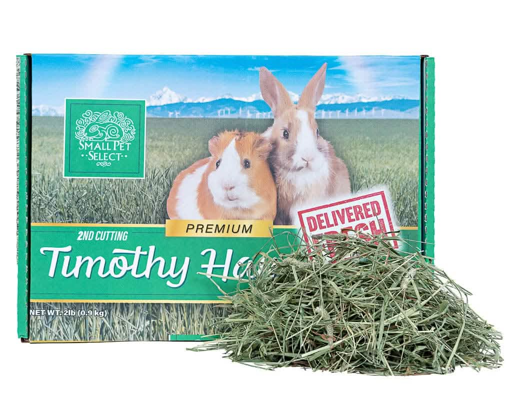
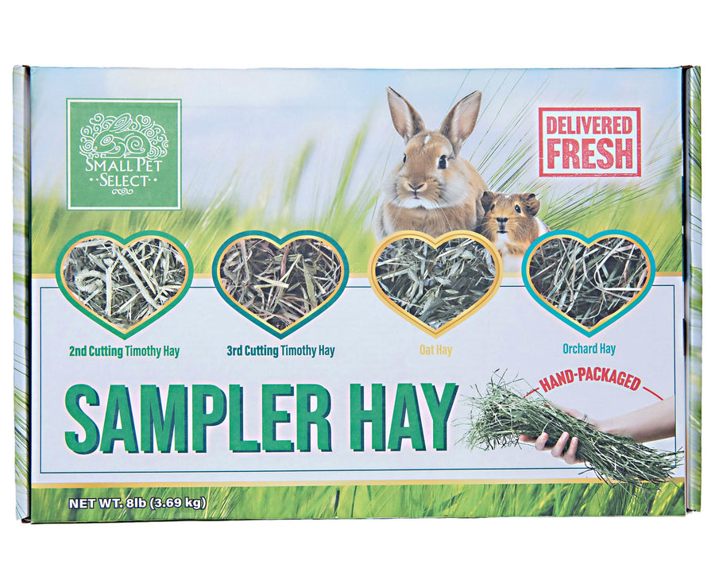
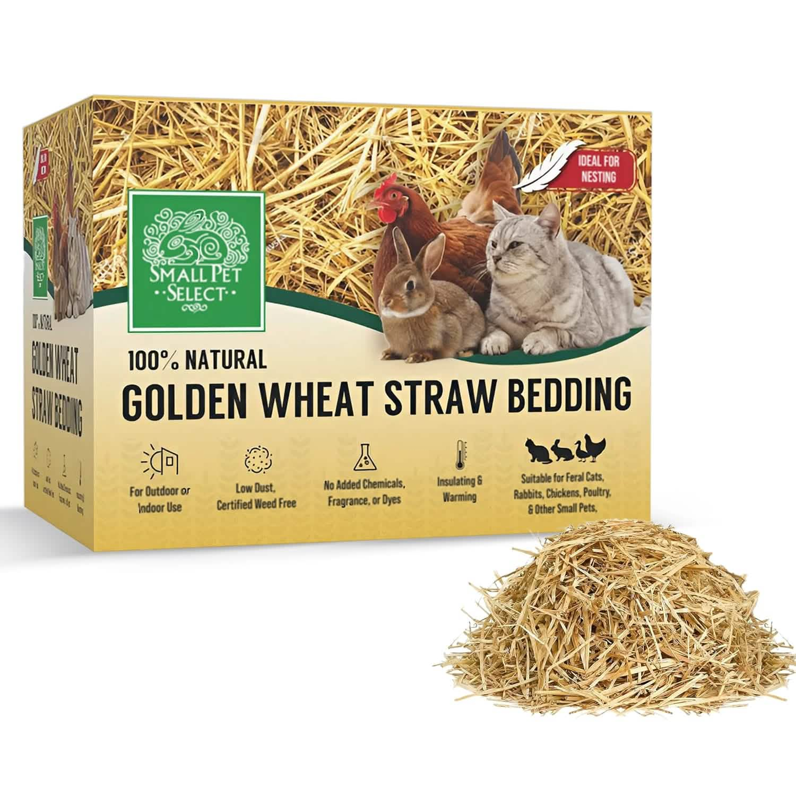

2nd Cutting Timothy Hay
Second-cutting Timothy hay with a leafy texture and soft stems.
View official product ↗HAY • BEDDING • EVERYDAY SUPPLIES
Explore hay and bedding, then plan a refill from the amount your household actually uses.

Three real references. Confirm options, prices and availability at the official store.
Second-cutting Timothy hay with a leafy texture and soft stems.
View official product ↗
A hay sampler intended to compare the included hay varieties.
View official product ↗
Wheat-straw bedding, distinct from a feeding-hay product.
View official product ↗YOUR LOCAL SHORTLIST
Your selection stays in this browser. It does not reserve products or submit orders.
Small Pet Select organizes shopping by pet and product category.
Hay, bedding, food and enrichment have separate catalog sections.
The site offers an Autoship route; this preview does not enroll or change a subscription.